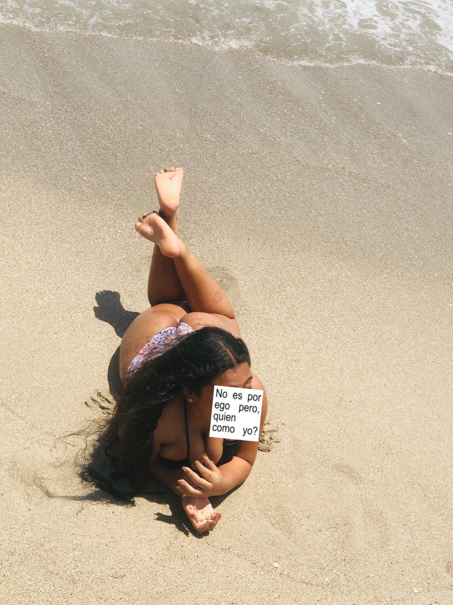
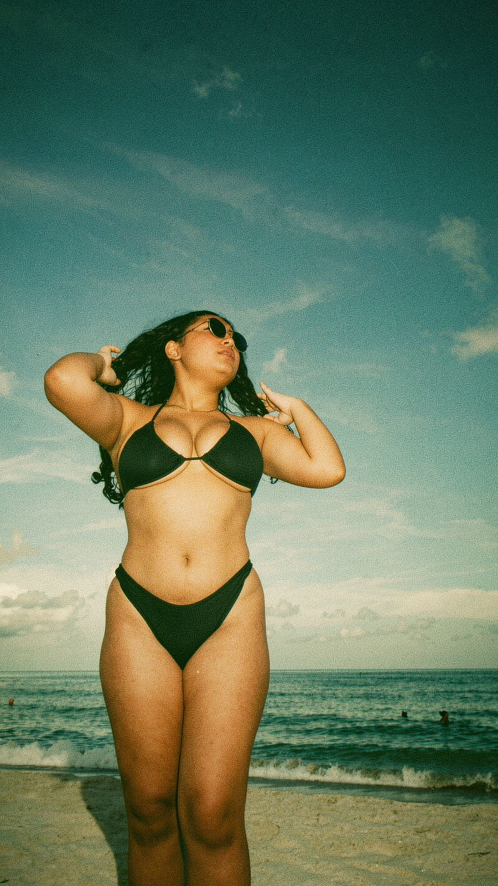
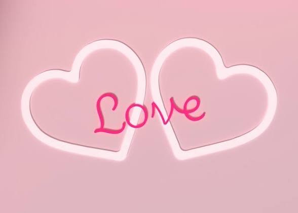

Esta carta solo podrá abrirse el:

Queridísima Anye, feliz cumpleaños. Te quiero mucho… fin. Jajaja, no mentira, mi reina. Quería decirte que te quiero muchísimo, Anyelina. Gracias por todo lo que me has brindado, reina hermosa. Aunque a veces te portes mal conmigo, en serio quiero decirte que te amo, Anyelina. Te deseo lo mejor en este día tan maravilloso. Espero que la pases súper bien, mi vida, y que Dios siga guiando cada uno de tus pasos. Y ahora sí, si me permites, te diré un pequeño poema. 💌 Querida Anye, a veces pienso que llegaste como llegan las canciones bonitas: sin avisar, pero quedándote en la mente mucho después de terminar. Quiero decirte lo mucho que te quiero, incluso antes de avanzar. Quiero desearte un feliz cumpleaños para comenzar. También quiero que sepas que cuentas conmigo para lo que quieras. Incluso si algún día te dan ganas de robar… cuentas conmigo para lo que quieras, sobre todo en los momentos en que sientas que no tienes a nadie más. Es un poema corto, pero con mucho sentimiento. Te quiero mucho, Anye, y me tienes muy contento, no te puedo mentir. Te amo de una manera distinta. 💌 Tal vez este poema no alcance para explicar todo lo que haces sentir, pero quería que supieras que entre tantas casualidades de la vida, tú terminaste siendo mi favorita.

